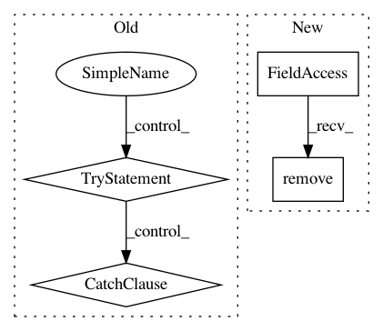

8c35227c6e3c4a6b85d2f719c9a62031f5e4ca6f,src/python/pants/java/nailgun_io.py,NailgunStreamWriter,run,#NailgunStreamWriter#,136
Before Change
if data:
NailgunProtocol.write_chunk(self._socket, self._chunk_type, data)
else:
try:
if self._chunk_eof_type is not None:
NailgunProtocol.write_chunk(self._socket, self._chunk_eof_type)
self._socket.shutdown(socket.SHUT_WR) // Shutdown socket sends.
except socket.error: // Can happen if response is quick.
pass
finally:
self.stop()
After Change
if errored:
for fh in errored:
self._in_files.remove(fh)
In pattern: SUPERPATTERN
Frequency: 3
Non-data size: 4
Instances
Project Name: pantsbuild/pants
Commit Name: 8c35227c6e3c4a6b85d2f719c9a62031f5e4ca6f
Time: 2017-12-12
Author: kwlzn@users.noreply.github.com
File Name: src/python/pants/java/nailgun_io.py
Class Name: NailgunStreamWriter
Method Name: run
Project Name: facebookresearch/ParlAI
Commit Name: 9ad1d2da68aa4acf817562502340bf319276b283
Time: 2019-05-14
Author: jju@fb.com
File Name: parlai/mturk/core/dev/socket_manager.py
Class Name: SocketManager
Method Name: close_channel
Project Name: GoogleCloudPlatform/PerfKitBenchmarker
Commit Name: 3d95ae5cd11987e4c963baf4da374b1fa139b807
Time: 2016-06-29
Author: carlos.torres@rackspace.com
File Name: perfkitbenchmarker/providers/openstack/os_virtual_machine.py
Class Name: OpenStackVirtualMachine
Method Name: _GetSchedulerHints